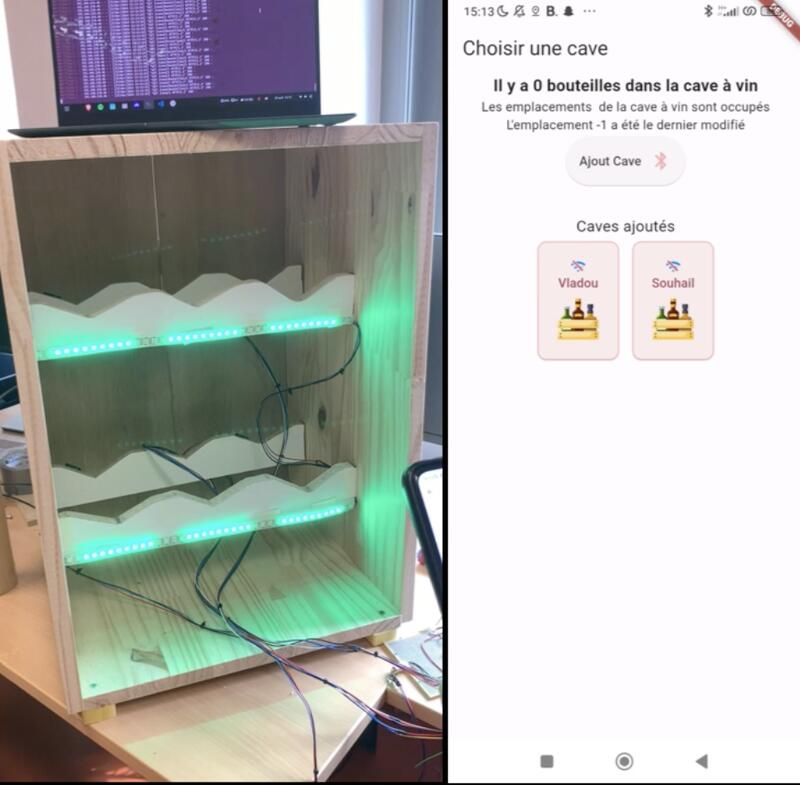

Projet Cave à Vin Connectée
Application • Web • Hardware

Description
Projet pluri-spécialités de 4ᵉ année (PoC). Le projet consiste à créer un système de rangement innovant pour bouteilles, inspiré des casiers à vin traditionnels mais intégrant des technologies modernes. Les bouteilles y sont stockées couchées, rendant l'étiquette peu visible, mais le système permet de les ranger ou de les sortir facilement. Le rangement est conçu en matériau noble, ajoutant à son esthétique et à son désirabilité.
Fonctionnalités
- Identification et Inventaire : L’utilisateur identifie sa bouteille via son smartphone.
- Stockage Libre : La bouteille peut être déposée n’importe où dans le casier.
- Association et Mise à Jour: Le système associe l’emplacement détecté à la bouteille identifiée, met à jour l’inventaire et informe l’utilisateur.
- Consultation à Distance: L’utilisateur peut consulter son inventaire depuis n’importe où via son smartphone.
- Localisation Facile: L’utilisateur peut localiser une bouteille grâce à un indicateur lumineux intégré.
- Inventaire en Ligne: L’inventaire doit être accessible via un serveur connecté à Internet.
Contraintes techniques
- Autonomie d'Inventaire: Le système doit gérer l'inventaire de manière autonome sans nécessiter d'interaction smartphone pour chaque action de rangement ou retrait.
- Manipulation Unitaire: Une seule bouteille peut être manipulée à la fois.
- Technologies de Détection: Exploration de trois technologies de détection : mécanique, optique, et une technologie au choix.
- Connectivité Limitée: Le casier ne doit pas nécessiter de connexion radio directe à Internet, permettant une utilisation même sans WiFi ou réseau mobile.
- Localisation Facile: L’utilisateur peut localiser une bouteille grâce à un indicateur lumineux intégré.
Contributeurs
- Melchior Boutry
- Souhail Allam
- Vladimir Guillomont
- Gaston Duault
- Léo Marot
Galerie
